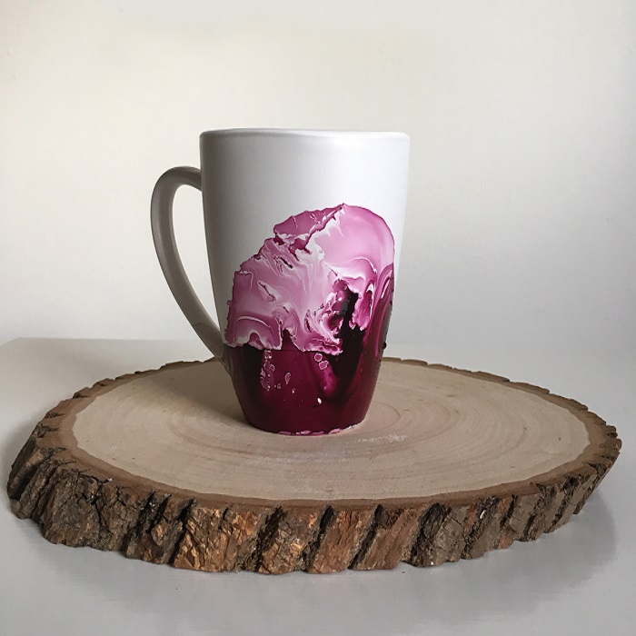

Marble Mug
Things you will need
- Bowl that you do not mind ruining
- Nail polish
- Warm water
- Mug
How to make it
Pour the warm water into the bowl and then slowly add the nail polish that you chose (you can add more than one color or use a toothpick to create different designs). After that take the mug and dip it directly down into the bowl. Wait for a few second then remove it from the water, leave it away to dry and you are done!